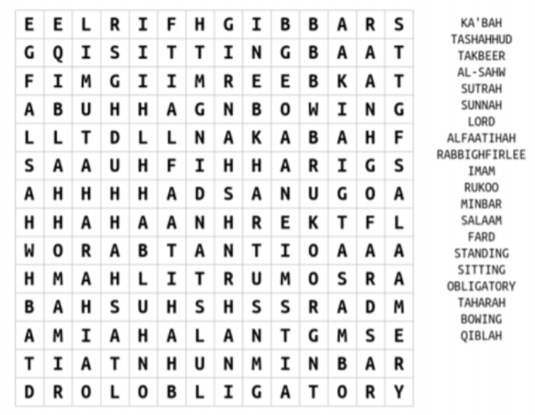
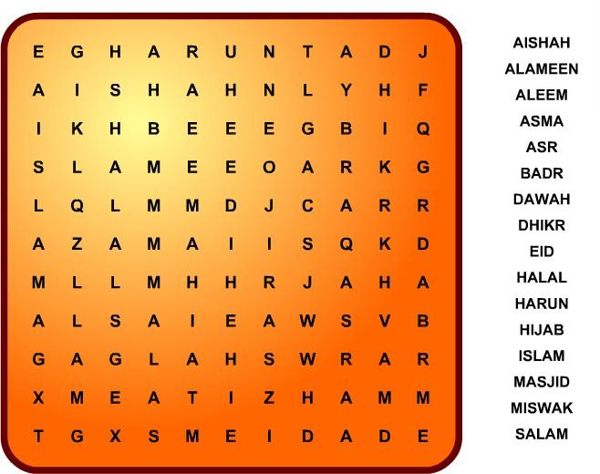
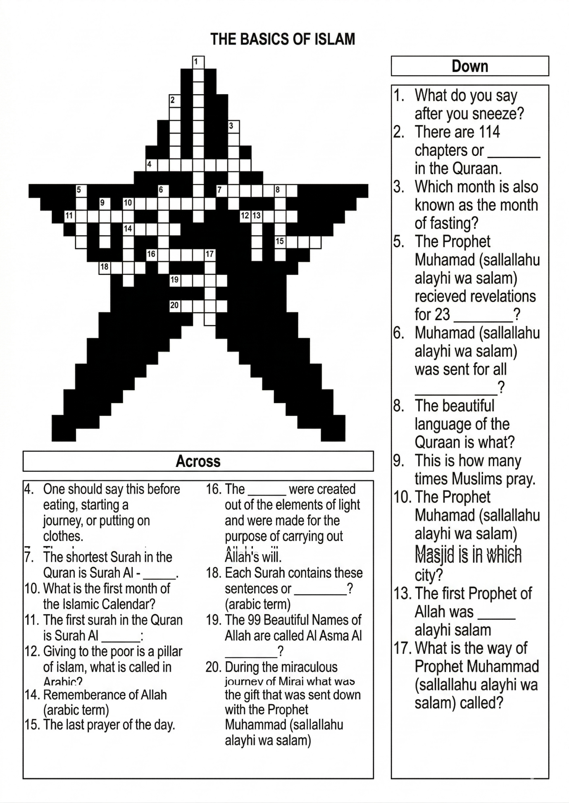

8
Puzzles & Quiz
Islamic knowledge challenge
Word Search Puzzles



Quiz — The Holy Quran
Section A — The Holy Quran
- What was the first word of the Qur'an revealed to Prophet Muhammad ﷺ?
- Through which angel did Allah سُبْحَانَهُ وَتَعَالَىٰ reveal the Holy Qur'an?
- Give the name of the cave where the Prophet ﷺ used to meditate and first received revelation.
- In which month and year was the Qur'an first revealed to Prophet Muhammad ﷺ?
- What is the meaning of the Arabic word "Qur'an"?
- Who was the first person the Prophet ﷺ told of his experience of revelation?
- What was the age of Prophet Muhammad ﷺ when Allah سُبْحَانَهُ وَتَعَالَىٰ appointed him His Messenger?
- Into how many ajza' (singular: juz') is the Holy Qur'an divided?
- How many chapters (surahs) does the Qur'an contain?
- Which Khalifah prepared the unified version of the Qur'an?
- True or False: Not a single letter or dot has been added or left out of the Qur'an since its revelation.
- Give the name of the longest surah of the Qur'an.
- Give the names of the shortest surahs containing only three ayat each.
- What are the verses of each surah called in Arabic?
- In which language was the Qur'an revealed?
- Over how many years was the Qur'an revealed?
- How many ayat does the Qur'an contain in total?
- How many surahs were revealed in Makkah and how many in Madinah?
- Which surah of the Qur'an begins without Bismillāhir-Raḥmānir-Raḥīm?
- Which surah was completely revealed in one sitting and is also the opening chapter of the Qur'an?
Section B — The Prophets عليهم السلام
- Who was the first Prophet عليه السلام and who was the last Prophet ﷺ?
- How many Prophets عليهم السلام are mentioned by name in the Qur'an?
- Give the Arabic names of the scriptures given to Musa عليه السلام, Dawood عليه السلام, and Eesa عليه السلام.
- Which Arabic word is used for the sayings and actions of Prophet Muhammad ﷺ?
- Name the five most important Prophets (Ulul 'Azm).
- In which year was Prophet Muhammad ﷺ born?
- What were the names of the Prophet's ﷺ parents?
- What was the name of the wet-nurse who cared for the Prophet ﷺ in early childhood?
- The Prophet's ﷺ father passed away before his birth. Who cared for him when his mother also passed away at age six?
- In which city of Arabia was Prophet Muhammad ﷺ born?
- What is the name of the Prophet's ﷺ tribe?
- To which clan of this tribe did the Prophet ﷺ belong?
- What is the other name of Madinah?
- What is the Islamic calendar year called — beginning from the Hijrah?
- What is the Arabic word for the people of Madinah who helped the migrants (Muhajireen)?
Section C — The Ka'bah & Islamic History
- Give the Arabic word for the Unity of Allah سُبْحَانَهُ وَتَعَالَىٰ.
- What is the sixth article of faith in Islam?
- Name the five pillars of Islam (Arkan ul-Islam).
- In which year was fasting during Ramadan made compulsory?
- What is the alternative to Wudhu when water is unavailable?
- What was the date of the conquest of Makkah?
- Prophet Muhammad ﷺ and Khadijah رضي الله عنها had four daughters — can you name them?
- Who was the first child to embrace Islam?
- Who was the first woman to embrace Islam?
- Who was the first man to embrace Islam?
- What is the name of the cube-shaped first house built for the worship of Allah سُبْحَانَهُ وَتَعَالَىٰ?
- Who were the first builders of this house?
- What is the year called in which Abraha made an unsuccessful attempt to destroy the Ka'bah?
- Which surah of the Qur'an describes Abraha's invasion?
- At what age does praying five times a day become compulsory for the Muslim?
- Two surahs of the Qur'an are named after insects — name them in Arabic and English.
- What is the Arabic word used for the biography of Prophet Muhammad ﷺ?
- Which was the most important battle of early Islam in the second year of Hijrah?
- Who was the first Muadhdhin (caller to prayer) of the Prophet ﷺ?
- During his farewell Hajj, how many Muslims were present at the Prophet's ﷺ sermon at Mount Arafat?